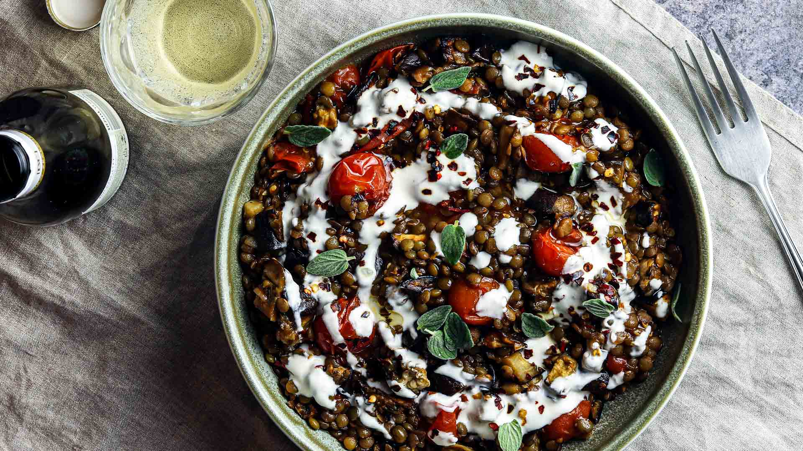

Linsen- und Auberginen-Eintopf mit Cherrytomaten

Beschreibung
Zutaten für eine Person
Just stew it!
Zutaten
- 1 Aubergine
- 1 Schalotte
- 3g Oregano, frisch
- 125 g Cherrytomaten
- 15 g Crème fraîche
- 100 g Grüne Linsen
- 8 g Tomatenmark
- 15 ml Granatapfelsirup
- 40 ml Weißwein
- 1 EL Olivenöl
- 460 ml Gemüsebrühe
- 2 Zehen Knoblauch
- 1/2 TL Chiliflocken
- Salz
- Pfeffer
Zubereitung
- Backofen auf 180°C vorheizen
- Aubergine waschen und in kleine Würfel schneiden
- Cherrytomaten waschen und abtropfen lassen
- Aubergine, Cherrytomaten, Öl, Salz und Pfeffer auf ein mit Backpapier belegtes Backblech geben, mischen und 25 min rösten
- Währenddessen Schalotte schälen und fein würfeln
- Knoblauch schälen und hacken
- Oregano waschen, trocken schütteln und Blätter abzupfen
- Öl in einem großen Topf erhitzen. Schalotte, Oregano und Knoblauch mit einer Prise Salz darin ca. 5 min braten
- Tomatenmark hinzufügen und 1 min weiterbraten
- Mit Weißwein ablöschen und köcheln lassen, bis sich die Sauce reduziert
- Anschließend Linsen und Gemüsebrühe hinzufügen und 30 min köcheln lassen
- Sobald die Linsen gar sind, Tomaten, Aubergine und Granatapfelsirup hinzugeben
- Linsen- und Auberginen-Eintopf in Schüsseln servieren und mit Crème fraîche, Chiliflocken und etwas Olivenöl genießen
Guten Appetit!